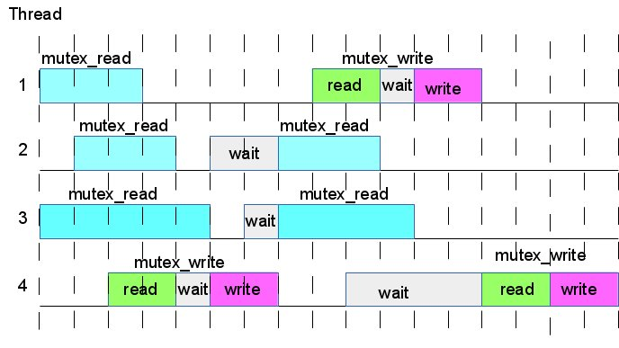

The [ Counter Tree + Suballocator ] Library
Francisco Jose Tapia Copyright ©
2010-2013 Francisco Jose Tapia
1.3.6.-
New Lock System ( Single Write Multiple Read Mutex)
Over a data structure we can do two kind of
operations :
- Read operations , or operations that don't modify the data
structure
- Write operations , or operations that modify the data structure.
In a concurrent data structure, several threads can done read
operations simultaneously , but only one can do a write operation, and
the others must wait until finish.
In many write operations, by example , delete a node in a map from a
key, we can see two parts :
- 1) Look for the node from the key
- 2) Delete the node found in the point 1
In many operations the point 1 spend more time than the point 2. It
would be safe permit read operations simultaneously with the point 1
of the write operation, and begin with the point 2 only when have an
exclusive lock of the data structure. This minimize the lock
contentions, permitting to increase the number of concurrent
operations over the same data structure.
With the mutex provided by C++11, it is not possible to build a lock
system for to do this. Due this the library have a new mutex ( Single
Write Multiple Read Mutex), designed and created for this library.
This new mutex permit do all the described before in a easy and fast
way. A detailed description of this mutex is in the pdf document

The idea is to have the lock data and lock
functions inside the class. With the actual design the users can make
programs without knowledge about locks.
You can find a detailed description of the lock
method in the point 5.-4-Description
of the single write multiple read mutex.
1.3.7.-
Safe concurrent programming. New functions of the classes
When only 1 thread don't have conflict in the
access to a resource or data structure. When you have several threads
the conflicts associates to the concurrency can appear, because some
operations need exclusive access . The tools for to prevent the
conflicts are the locks.
A lock is like a door in a point of the program.
If the door is not locked the thread can cross this point. If it is
locked must wait until unlocked. These locks can be explicit or
implicit. The explicit are managed by the user, he lock and unlock
explicitly it. The implicit are included in the code of the function,
and when you invoke it , the locks are managed internally, but the
user don't do anything with them.
With the explicit locks, the user must know the
use of the locks and understand perfectly the use and implications of
the locks in order to prevent bad locked resources and threads
mutually locked (deadlock).
With the implicit locks, the user don't need to
know the use of the locks because they are managed internally by the
functions. The programming of concurrent data structures is easy
because you don't need take care about the locks. The countertree
library use implicit locks.
Some complex problems can't be fully managed
with the implicit locks and must use the locks explicitly. If you need
this, you will find a description in the next point 1.1.4..- Detailed
lock description. If you don't need you can jump it.
In the multicore development, a great percent of the problems are
associates to a small couple of situations. This point describe the
situations, the problems associated and the solution implemented for to
resolve them in a safe and easy way for the final user.
The solution adopted is not the only one, and perhaps not the best. It
is only, the best I had found. My aspiration is to start a discussion
about the problems in order to find the best solutions. But while
appear, provide to the community of programmers a solution for to help
them while the final solution appear.
Perhaps the best way for to explain this is to show you a problem
describing situations ans the problem associated.
SITUATION 1
You are using a set of elements ( S) . Several cores process the
elements of the set, always try to process the first element of the set
, if it is not empty. The process done for the thread is
THREAD T1 THREAD T2
while ( S.size() == 0 ) ; .
It = S.begin() ; while ( S.size() == 0 ) ;
Elem = *It ;It = S.begin() ;
S.erase (It); Elem = *It ;
S.erase (It);
- When the set S have only one element, the thread T1 beginning
this process, and the thread T2 begin the same code a byte later.
- T2 check the size of S is not zero and obtain the iterator begin (
).
- But when try to copy the pointed by the iterator obtained, that
node is being deleted by T1, perhaps fail , perhaps not.
- But when reach the last line and try to delete the iterator It,
the element don't exist and the set is empty. The program crash with
a fault access violation
SITUATION 2
Imagine a supermarket. You have registered users, and each one have a
unique key. You have the information in a map<key, bonus> named M.
The first value is the key user and the second is a double value with
the bonus in money obtained by a bunch of concepts.
- You have a thread T1, calculating and modifying the new bonus of
each user.
- You have other thread T2 which are responsible of the insertion
and deletion of users.
- The thread T1 looks for a key (K1) and obtain an iterator (
It1). With the iterator calculate the new bonus and with the
iterator access to the element and modify the second value.
- The thread T1 have the iterator It1 of the key K1, but while is
calculating the new bonus, the thread T2, delete that key. When T1
try to access to the pair <key, bonus> you have an fault
access violation. The program crash.
THREAD T1 THREAD T2
It = M.find( k1) ; Alfa = M.find( k1) ;
auto B = CalculateBonus (It->second) ; if ( Alfa != M.end()) M.erase ( Alfa ) ;
It->second = B ;
SOLUTION
The idea for to prevent these problems is to
pack
several elemental instructions inside the exclusive lock.
Combining these basic operations , appear new group of instructions,
easy to understand, easy to use and safe. You can argue me that if
fail, the system is not well designed. Nobody can prevent the lack of
logic in a program, but can prevent the crash of the program.
The exclusive lock, as described before, have two parts. In the first
part can be concurrent with others operations which use shared locks,
and started before this operation. In the second part wait until finish
all the operations with shared lock, and modify the tree.
Many of these functions have the suffix _if, which indicates that the
operation have a function as parameter ( usually a lambda function),
which is executed inside the exclusive lock, and if return true the
operation is done and if false don't do it
template <class Function>
mypair insert_if ( Function && M, const value_type& val )
These classes provide a rich set of instructions, the classical of STL
data structures and others with a function as parameter for to do
something inside the exclusive lock of the function
This provide you a safe way for to do the operations.
You can find a list of these functions in the description of each class.
If you want a detailed description of the functions with the source code
The next examples shows the two previous described situations and their
safe codification with the new functions
SITUATION1
THREAD T1 THREAD T2
while ( S.size() == 0 ) ; .
It = S.begin() ; while ( S.size() == 0 ) ;
Elem = *It ;It = S.begin() ;
S.erase (It); Elem = *It ;
S.erase (It);
With the new functions
THREAD T1 THREAD T2
uint32_t code=S.pop_copy_front ( Elem); uint32_t code=S.pop_copy_front ( Elem);
It's safe and robust
SITUATION 2
THREAD T1 THREAD T2
It = M.find( k1) ; Alfa = M.find( k1) ;
auto B = CalculateBonus (It->second) ; if ( Alfa != M.end()) M.erase ( Alfa ) ;
It->second = B ;
With the new functions
typedef countertree::map_cnc <user_t, double> MapBonus;
typedef MapBonus::value_type MB_vt;
MapBonus M ;
THREAD T1 THREAD T2
M.modify(k1,[](MB_vt &A){A.second= CalculateBonus( A.second);}); M.erase (k1)
Simple, thread safe and robust
 Boost
C++ Libraries
Boost
C++ Libraries